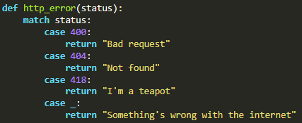

The match statement takes an expression and compares its value to successive patterns given as one or more case blocks.
Syntax
match expression:- case expression:
-
- ...
- case _: (wildcard)
-
Note: several expression can be combined using |


you can add an
if clause
to a pattern, known as a “guard”. If the guard is false,
match goes on to try the next case block.
Note: value capture happens before the guard is evaluated